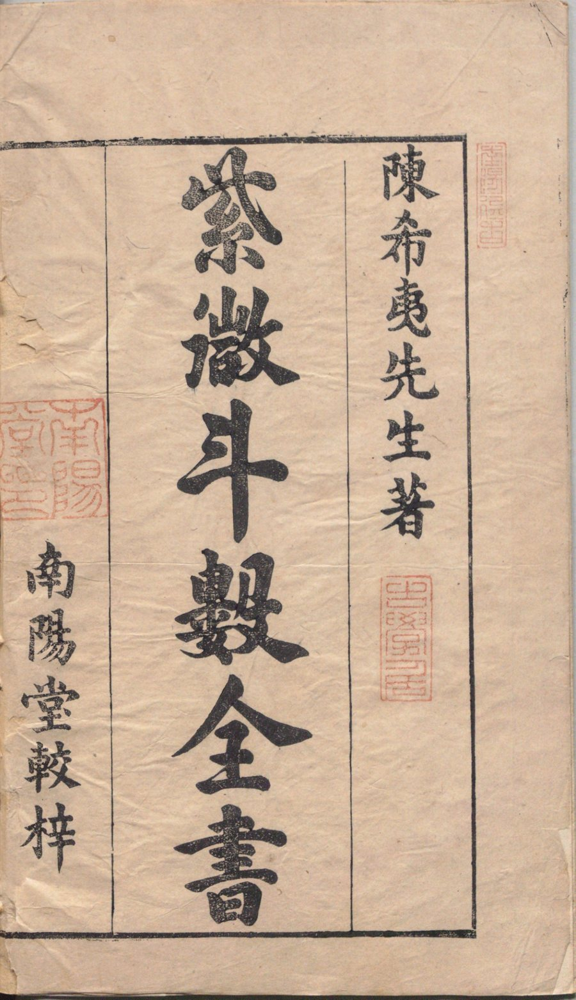
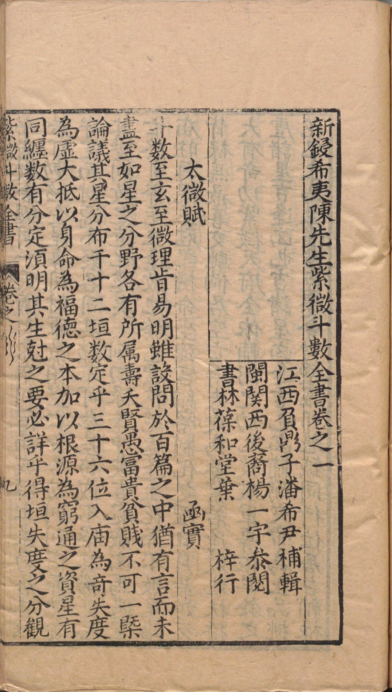
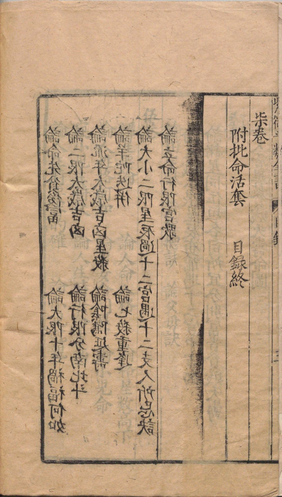
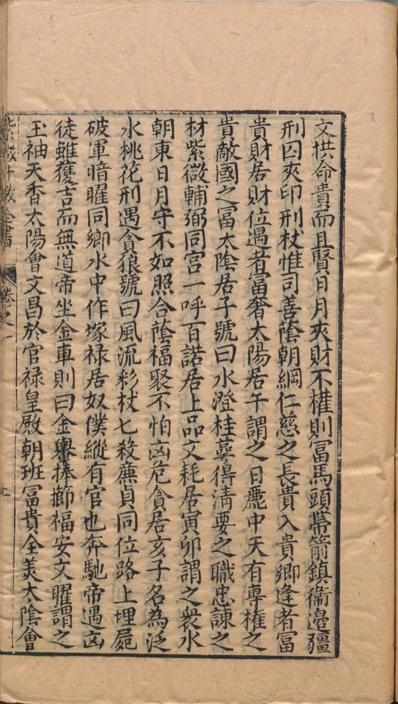

全书赋诀之祖；「例曰」以下为释义口诀缀录。
斗數至玄至微，理旨難明，雖設問於百篇之中，猶有言而未盡，至如星之分野，各有所屬，壽夭賢愚，富貴貧賤，不可一概論議。
其星分布一十二垣，數定乎三十六位，入廟為奇，失度為虛，大抵以身命為福德之本，加以根源為窮通之資。
星有同躔，數有分定，須明其生剋之要，必詳乎得垣失度之分。
觀乎紫微舍躔，司一天儀之象，率列宿而成垣，土星苟居其垣，若可移動，金星專司財庫，最怕空亡。
帝星動則列宿奔馳，貪守空而財源不聚。
各司其職，不可參差。
苟或不察其機，更忘其變，則數之造化遠矣。
祿逢沖破，吉處藏凶。馬遇空亡，終身奔走。
生逢敗地，發也虛花。絕處逢生，生花不敗。
星臨廟旺，再觀生剋之機。命坐強宮，細察制化之理。
日月最嫌反背，祿馬最喜交馳。
倘居空亡，得失最為要緊。若逢敗地，扶持大有奇功。
紫微天府全依輔弼之功，七殺破軍專依羊鈴之虐。
諸星吉，逢凶也吉。諸星凶，逢凶也凶。
輔弼夾帝為上品，桃花犯主為至淫。
君臣慶會，材善經邦。
魁鉞同行，位居臺輔。
祿文拱命，貴而且賢。
日月夾財，不權則富。
馬頭帶劍，鎮衛邊疆。
刑囚夾印，刑杖惟司。
善蔭朝綱，仁慈之長。
貴入貴鄉，逢之富貴。
財居財位，遇者富奢。
太陽居午，謂之日麗中天，有專權之貴，敵國之富。
太陰居子，號曰水澄桂萼，得清要之職，忠諫之材。
紫微輔弼同宮，一呼百諾居上品。文耗居寅卯，謂之眾水朝東。
日月守不如照合，蔭福聚不怕凶危。
貪居亥子，名為犯水桃花。刑遇貪狼，號曰風流彩杖。
七殺廉貞同位，路上埋屍。破軍暗曜同鄉，水中作塚。
祿居奴僕縱有官也奔馳，帝遇凶徒雖獲吉而無道。
帝坐金車則曰金輿捧櫛，福安文曜謂之玉袖天香。
太陽會文昌於官祿，皇殿朝班，富貴全美。
太陰會文曲於妻宮，蟾宮折桂，文章全盛。
祿存守於田財，堆金積玉。財蔭坐於遷移，巨商高賈。
耗居祿位，沿途乞食。貪會旺宮，終身鼠竊。
殺居絕地，天年夭似顏回。貪坐生鄉，壽考永如彭祖。
忌暗同居身命疾厄，沉困尪羸，凶星會於父母遷移，刑傷破祖。
刑殺同廉貞於官祿，枷杻難逃，官符加刑殺於遷移，離鄉遭配。
善福居空位，天竺生涯。輔弼單守命宮，離宗庶出。
七殺臨於身命加惡殺，必定死亡。鈴羊合於命宮遇白虎，須當刑戮。
官府發於吉曜，流殺怕逢破軍。羊陀憑太歲以引行，病符官符皆作禍。
奏書博士與流祿，盡作吉祥。力士將軍同青龍，顯其權勢。
童子限如水上泡漚，老人限似風中燃燭。遇殺無制乃流年最忌，
人生榮辱限元必有休咎，處世孤貧數中逢乎駁雜，學至此誠玄微矣。
【太微赋正文】斗数之理至玄至微，虽百篇之言犹不能尽；星辰各有分野所属，寿夭贤愚富贵贫贱不可一概而论。十二垣、三十六位，星曜入庙为奇、失度为虚；以身宫命宫为福德之本。星曜同躔须明生克之要，紫微司一天仪之象，金星专司财库最怕空亡；帝星动则列宿奔驰，贪狼守空则财源不聚——各司其职，不可参差，否则失其造化之机。
【例曰】这一组口诀逐条给出断例：禄逢冲破则吉中藏凶，天马遇空亡终身奔走；星临庙旺再看生克，命坐强宫细察制化；日月最嫌落陷反背，禄马却喜交驰。紫微天府全靠左右辅弼，七杀破军则依羊陀火铃之力。末段列举诸格局：君臣庆会、魁钺同行、禄文拱命、日月夹财、马头带剑、刑囚夹印，以及太阳居午「日丽中天」、太阴居子「水澄桂萼」等，皆以星曜庙陷与组合定富贵之品第。
十二宫：命宫、兄弟、夫妻、子女、财帛、疾厄、迁移、仆役、官禄、田宅、福德、父母——星曜分布的十二个领域。
星曜处于其力量最强的宫位为「入庙」，处于无力之宫为「失度」（落陷）；庙旺利陷是断吉凶的第一步。
截空、旬空二星之位。吉星遇之则力减，故金星（财星）最怕空亡；天马遇空亡主终身奔走。
紫微星，北斗之主；紫微动则诸星随之，故「帝星动则列宿奔驰」，喻紫微为全盘枢纽。
擎羊、陀罗、火星、铃星四煞星。七杀破军等杀破狼格局须赖四煞成势，然煞星也主刑伤动荡。
擎羊居午宫守命的格局，古诀以为镇卫边疆之贵将——以煞成格的典型例子。
本篇对应原书叶逐一列置，四叶齐备，无一缺省。




本册为《紫微斗数全书》第一章样章，录卷首太微赋（含例曰）一篇，白话通释与术语笺释随文。原书叶对照为本册铁律：本篇所涉原书叶四帧逐叶列置，无一叶缺省。样章确认后，即按此体例续成全篇并及全书。